The Trapper

Armed with a bag of Bear Traps, The Trapper specializes in catching unsuspecting Survivors. By placing traps in high-traffic areas and thick patches of grass, he creates a deadly area that forces Survivors to move with caution. When dealing with The Trapper, a simple misstep can prove fatal.
The Wraith

Using his Wailing Bell to render himself invisible, The Wraith tracks his prey and strikes with little warning. Upon hearing the Bell’s fateful chime, Survivors must think fast or suffer the consequences. A hit-and-run specialist, The Wraith is adept at keeping everybody injured.
The Hillbilly
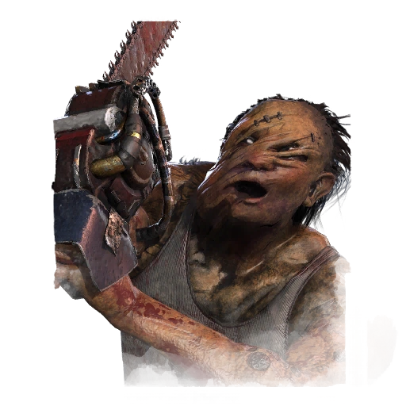
The sound of a revving motor, followed by a bloodthirsty scream of rage. The Hillbilly isn’t exactly subtle, but he makes up for it in brutal efficiency. Capable of traversing great distances at a rapid pace, those in his path will be rudely introduced to one-hundred gnashing chainsaw blades.
The Nurse

Using her Blink ability, The Nurse can teleport great distances in moments, predicting and cutting off Survivor routes. A powerful process best honed by experience, careless Blinks are punished with a wave of fatigue. The epitome of high risk, high reward, The Nurse can end chases with surgical precision.
The Huntress

Armed with throwable hatchets, The Huntress is a constant threat to Survivors, even those at a great distance. With patience and precision, chases can end as quickly as they begin. Predict Survivor movement and let your hatchet fly – there's nothing quite like the rewarding sound of a target struck.
The Doctor
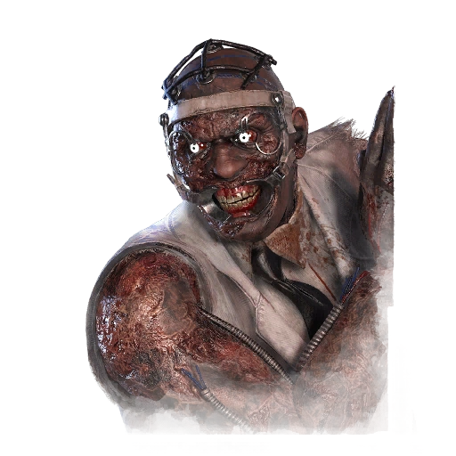
Even the simplest tasks become exceedingly difficult in the clutches of madness. The Doctor’s disturbing methods drive Survivors deep into insanity, filling the air with their deranged screams and revealing their locations. Nothing stops a window vault in its tracks like a healthy dose of Shock Therapy.
The Hag
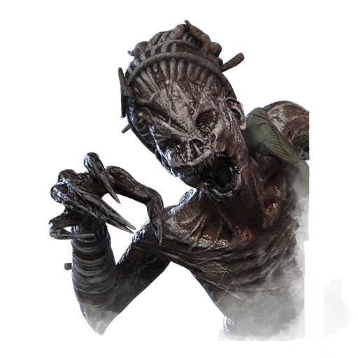
The Hag specializes in creating a dangerous web of Phantasm Traps, to be triggered by unsuspecting Survivors. She can instantly teleport to a triggered Trap, striking the Survivor that sprung it. Lock down key areas, make rescues a deadly gamble, and end chases quickly with strategic Phantasm Trap placement.
The Shape - Michael Myers
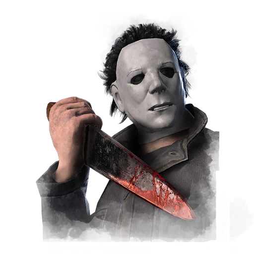
The Shape lurks in the distance, patiently biding his time. His evil builds while stalking Survivors, fuelling him with malevolent power. As the Trial progresses, The Shape evolves from a quiet menace to an unstoppable juggernaut capable of shredding through even the most resilient teams.
The Cannibal - Leatherface
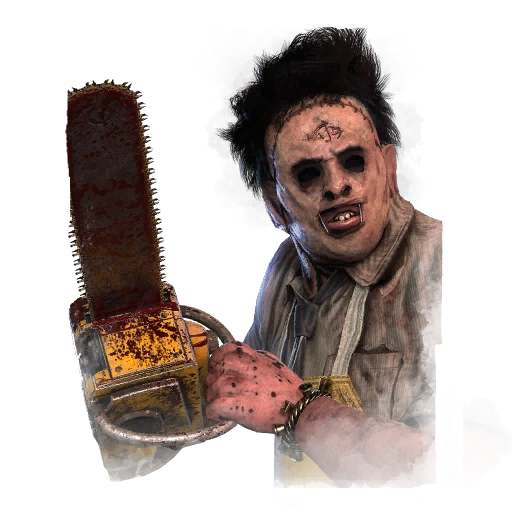
Leatherface knows a thing or two about chainsaw massacres. Any Survivor in his path will be instantly cut down, and his presence alone is enough to instill sheer panic. Capable of hitting multiple targets with a single swing, Leatherface is an unstoppable force with an insatiable appetite.
The Nightmare - Freddy Krueger
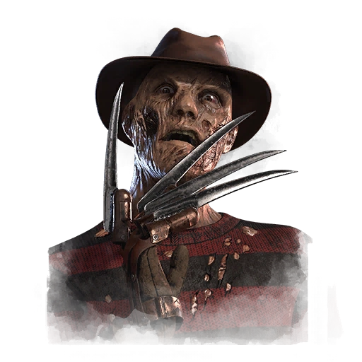
Over time, The Nightmare forces Survivors into the Dream World. Once inside, Survivors will quickly realize the absence of a Terror Radius. With the ability to slow Survivors with Dream Snares, deceive with fake Dream Pallets, and pressure the map by teleporting directly to generators, The Nightmare lives up to his name.
The Pig - Amanda Young
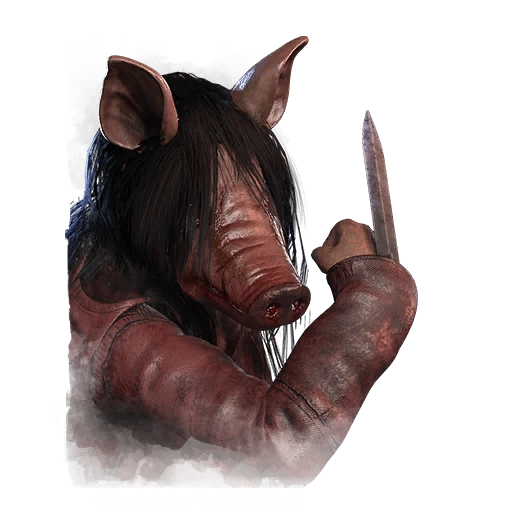
Creep up and ambush Survivors with The Pig, the stealthy successor to the legendary Jigsaw. But simply hooking them isn’t enough. Survivors can first be punished with a Reverse Bear Trap, which they must race to remove at Jigsaw Boxes across the map. Suddenly, repairing generators isn’t quite so pressing...
The Clown
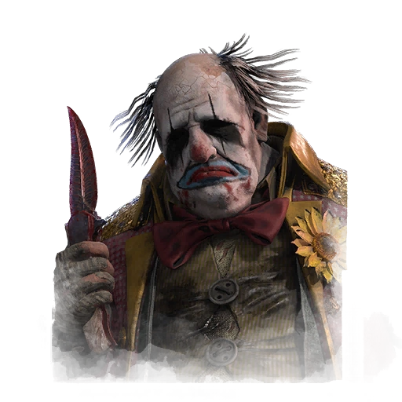
Using his Afterpiece concoctions, The Clown can steer Survivors into dangerous areas and shorten chases. His purple bottle emits a cloud of noxious gas that disorients, slows down, and hinders Survivors. Throwing the yellow bottle requires foresight, as anyone who passes through the gas experiences a speed burst.
The Spirit
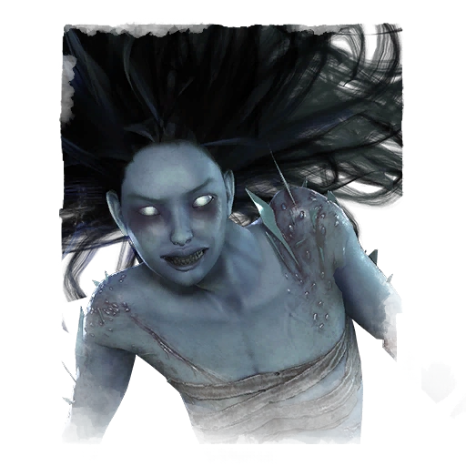
While using her Yamaoka’s Haunting Power, both The Spirit and Survivors cannot be seen by one another. Instead, Survivors are revealed by their Scratch Marks, breathing, and interactions with the environment. Each chase becomes a battle of wits, a duel where only the sharpest mind-games prevail.
The Legion
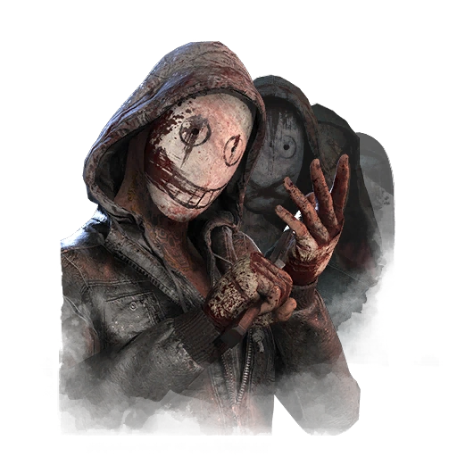
The Legion are a close-knit group of murderous Killers, linked by the desire to dole out pain in equal measure. Keep the injuries coming with Feral Frenzy, a high-intensity sprint that can set off a devastating chain reaction. Survivors will be constantly tending to their wounds, leaving them vulnerable to be picked off one by one.
The Plague
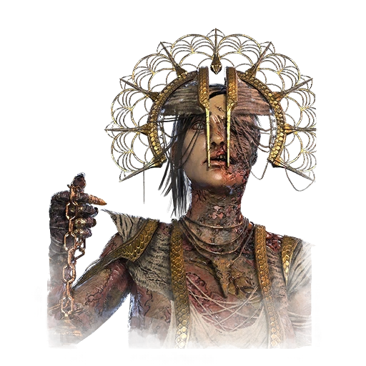
Traditional healing methods are ineffective against The Plague’s vile Purge, which can infect generators and Survivors. Pools of Devotion are the only respite from the spreading pestilence. The more Survivors heal, the stronger The Plague’s power becomes, transforming her Purge into a sickening projectile of pain.
The Ghost Face
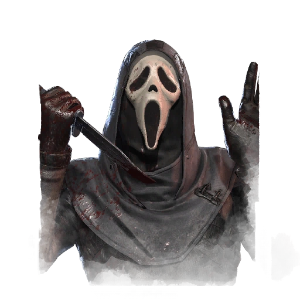
A stealth-focused Killer capable of approaching unseen, The Ghost Face is adept at stalking his prey. Keep tabs on each individual Survivor, patiently marking them for death – provided you can remain hidden. Lie in wait until the perfect time to strike, and down Survivors before they know what hit them.
The Demogorgon
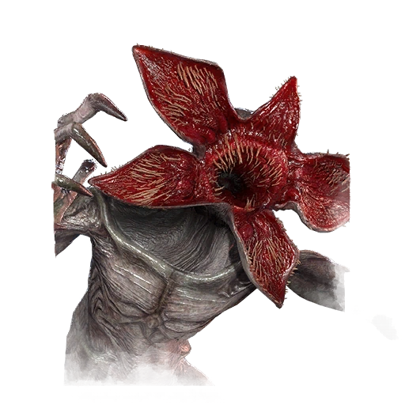
There’s no reasoning with The Demogorgon, a vicious predator from the depths of The Upside Down. Capable of traversing the Map through a series of Portals, it chases down prey with ferocious intensity, finishing them off with a ferocious lunging strike.
The Oni
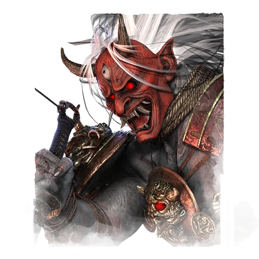
Redefine wrath with The Oni, a truly formidable force. Injured Survivors leave a trail of Blood Orbs, fuelling The Oni’s rage and sending him into a state of fury. Upon unleashing a bloodcurdling roar, The Oni gains the ability to charge with vengeful purpose, instantly cutting down anyone in his way.
The Deathslinger
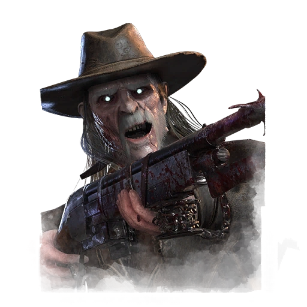
Upon catching prey unaware, the Deathslinger uses his handmade gun – The Redeemer – to skewer fleeing Survivors with a long-distance harpoon. Accurate aim, patient tracking, and sharp predictions are crucial to landing successful shots, but the reward of a Survivor’s scream as they’re reeled in will never sound so sweet.
The Executioner - Pyramid Head
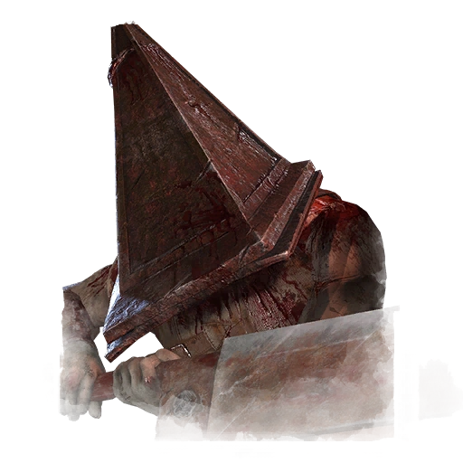
Merciless and unforgiving, The Executioner brings his own form of twisted justice to The Fog, tormenting Survivors with hazards around the map. Hooks are an effective tool, but nothing punishes quite like a Cage of Torment. All hope will swiftly fade the moment Pyramid Head raises his mighty blade to deliver the Final Judgment.
The Blight
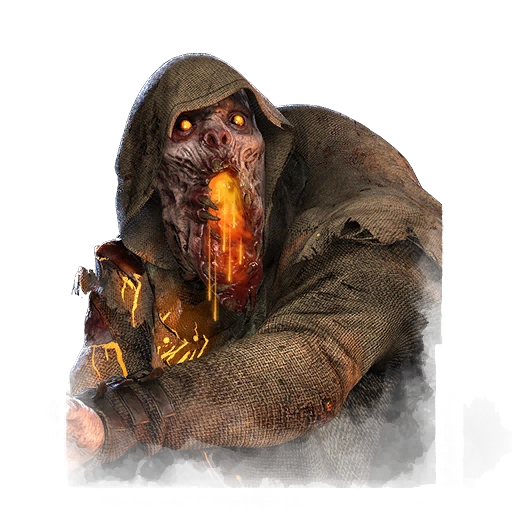
Capable of gaining ground on Survivors in mere moments, The Blight’s lethal efficiency must never be underestimated. With the ability to bounce off surfaces and realign his trajectory, his relentless presence forces Survivors into snap decisions. The learning curve may feel steep, but mastering The Blight is a worthwhile pursuit.
The Twins
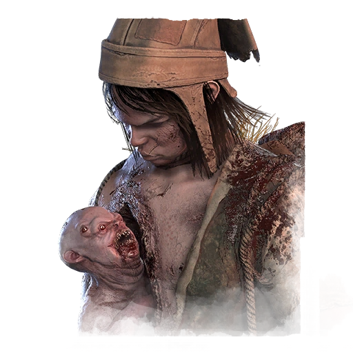
Charlotte Deshayes can unleash her conjoined twin brother Victor, falling dormant until he’s finished hunting. Victor moves at high speeds and strikes with a pounce attack that debilitates and injures. Down Survivors with Victor and hook them with Charlotte, an oppressive tandem that can quickly disrupt even the best-laid plans.
The Trickster
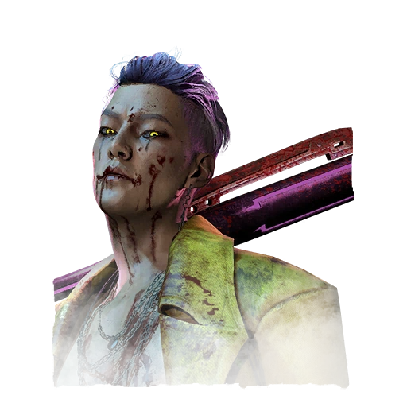
Armed with an arsenal of throwing knives, The Trickster overwhelms fleeing Survivors with a relentless barrage of blades. Seemingly safe actions like vaulting windows and dropping Pallets turn into target practice for this twisted K-Pop Idol, whose stylish showmanship is rivalled only by his gleeful bloodlust.
The Nemesis
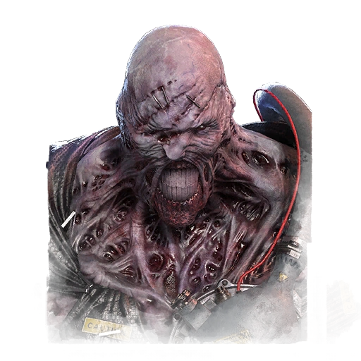
An unstoppable force relentless in his pursuit, nothing can stop The Nemesis from achieving his goal. His sweeping Tentacle infects Survivors with the T-Virus, further enhancing his destructive power in the process. Easily smash through pallets and breakable walls while two A.I-controlled Zombies patrol the map, applying additional pressure.
The Artist
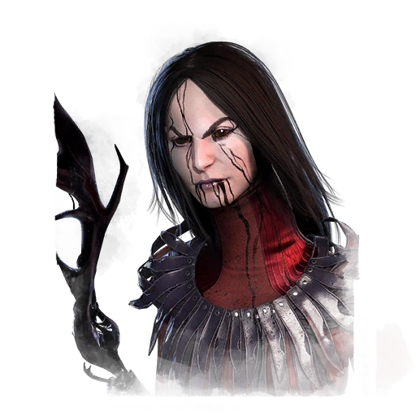
No matter the distance, The Artist and her murder of Dire Crows pose a constant threat to Survivors. Position up to three Crows and unleash them on a lethal trajectory, swarming and injuring anyone caught in their path. Use her Power to shut down key areas, predict and punish Survivor pathing, and gain valuable map-wide information.
The Onryo - Sadako
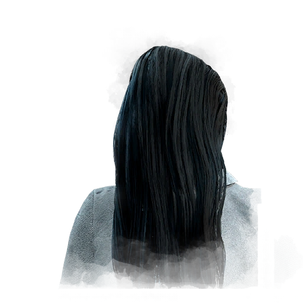
Capable of condemning Survivors to death through a powerful cursed videotape, Sadako’s wrath is inevitable. Her presence conjures several televisions, through which she can teleport and emerge with malevolent purpose. The fleeting glimpse of her approach ensures that a chilling fate is not far behind.
The Dredge
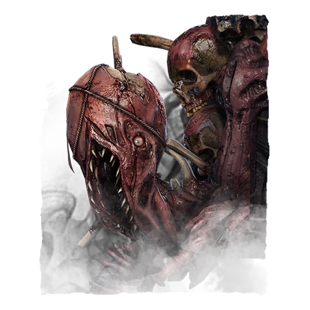
A twisted abomination too disturbing to bear, The Dredge’s malevolence is palpable. All light slowly drains in its presence, surrounding Survivors in darkness. Using lockers as map-wide gateways, it can emerge at any moment, seemingly everywhere at once.
The Knight
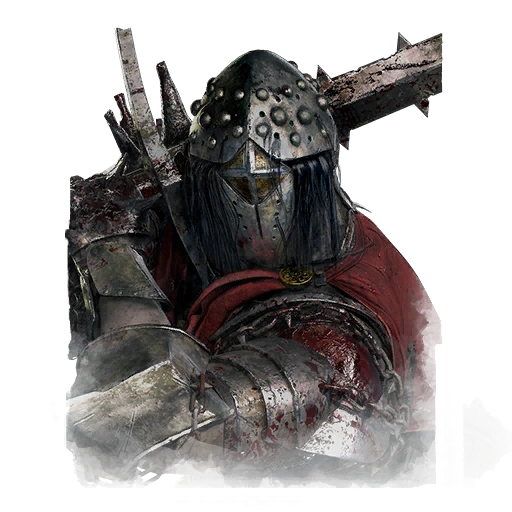
A nightmare to behold with longsword in hand, many have fallen to The Knight’s unyielding fury. His Guards – The Jailer, The Assassin, and The Carnifex – obey his commands with unwavering loyalty. Use them to patrol routes, deal with obstacles, and steer Survivors directly into your blade’s path.
The Artist
The Artist is a Killer who can throw paint on Survivors, causing them to become marked and take damage over time. She has a unique playstyle that can be very effective at controlling the map and creating pressure on Survivors.
The Mastermind
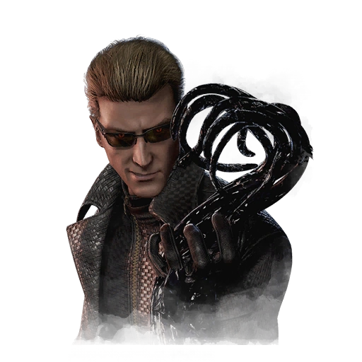
A visionary as brilliant as he is ruthless, Albert Wesker’s strategic mind is unrivalled. While some plans require intellect, others call for brute force. Rush forward to seize Survivors in your grasp and give them the gift of Uroboros – a necessary step on the path to evolution.
The Skull Merchant
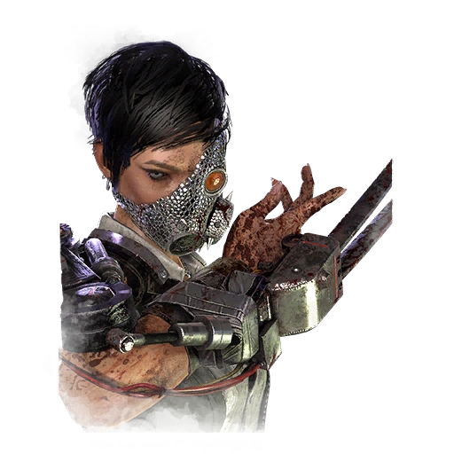
A cunning and ruthless hunter, The Skull Merchant strives to be the ultimate apex predator. Using her gruesome Drones to track Survivors, she specializes in creating a deadly web of surveillance. Many have fallen prey to her dark innovations, their bones later repurposed into her next invention.
The Singularity
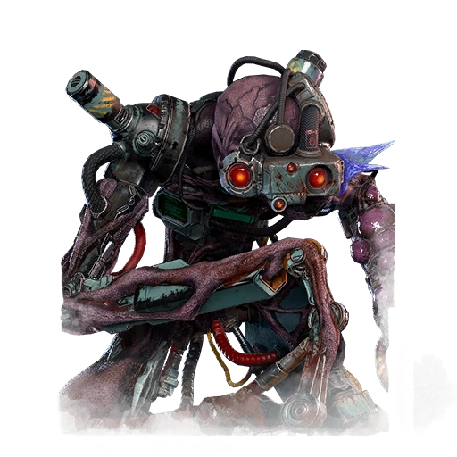
A potential catalyst of humanity’s extinction – or so it has been called – The Singularity is intelligent beyond measure and entirely void of morality. Its spread is inevitable, with the ability to materialize across the Map through a network of organic Biopods. Those that resist will only prolong their suffering.
The Xenomorph
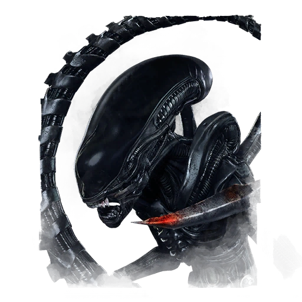
A perfect organism, born of violence, designed to kill, the Xenomorph is a relentless and cunning specimen. It stalks prey through subterranean tunnels, emerging without hesitation, striking with its razor-sharp tail, and eliminating prey one by one.
The Good Guy - Chucky
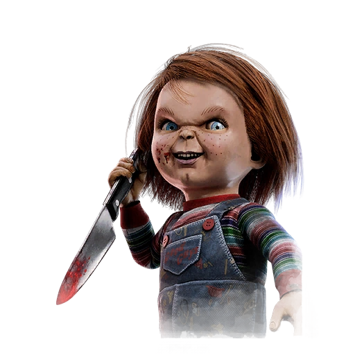
Viciously cruel with a cutting sense of humor, Chucky is a brutally effective killing machine. Using his diminutive frame to his advantage, he’ll pop up when Survivors least expect it, chasing them down and introducing them to his trusty weapons.
The Unknown
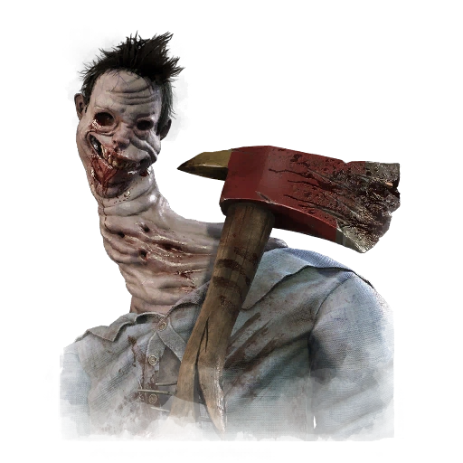
If you hear a soft voice crying out for help in the woods, stay the hell away. The true nature of The Unknown remains a mystery, barring one fatal certainty: to cross its path is to risk an unknowable fate.
The Lich - Vecna
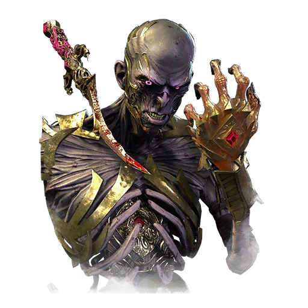
The Whispered One. Lord of the Rotted Tower. The Master of Secrets. Few dare speak his true name, for fear that he may hear—or worse. A master of magic and calculated conqueror, the archlich Vecna is relentless in his pursuit for dominance.
The Dark Lord - Dracula
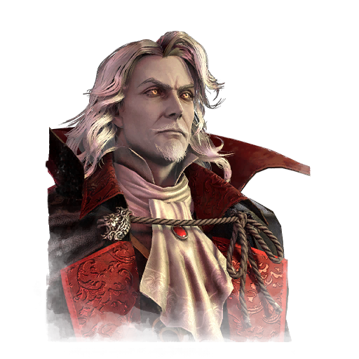
So comes the very night incarnate, accursed and ravenous, for darkness is Dracula’s domain. With the ability to transform into the vile denizens of the woods and conjure unnatural flames, all mortals shall succumb to The Dark Lord’s vengeance.
The Houndmaster
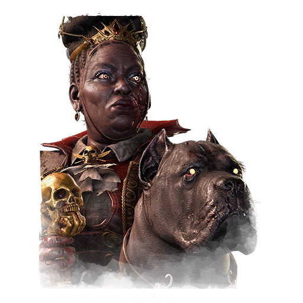
Cast adrift by a horrific tragedy, Portia Maye arose from the blood with renewed purpose: to inflict unspeakable pain on those who tore her family apart. With her loyal dog forever at her side, her insatiable lust for violence runs deeper than the darkest ocean trench.
The Ghoul
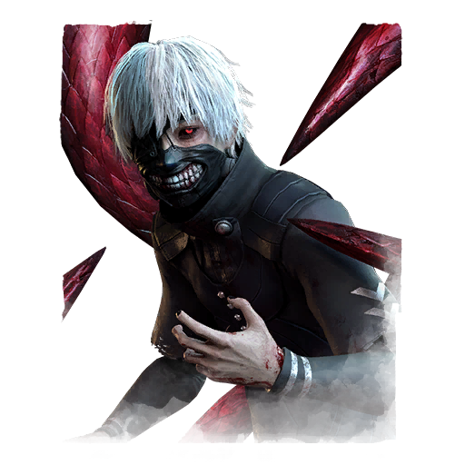
Drawn into The Fog, Ken Kaneki’s ghoulish nature ran rampant, fuelled by dark urges and insatiable hunger. If you see a black and scarlet eye blazing above a grotesque grin, it’s already too late…
The Animatronic - Springtrap
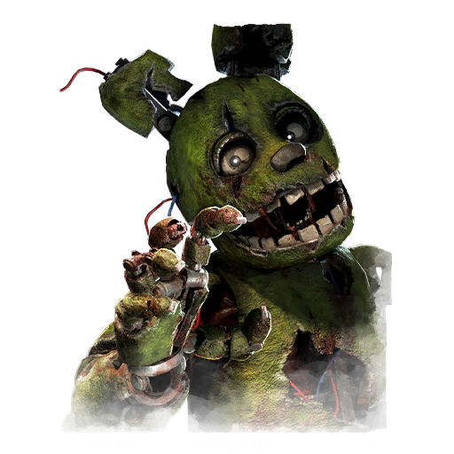
A monstrosity of flesh and metal, Springtrap’s bloodstained past is littered with the innocent dead. His horrifying innovations are a reminder that beneath the cruelty lies a brilliant inventor, whose creations brought laughter and screams to the same unfortunate audience.
The Krasue
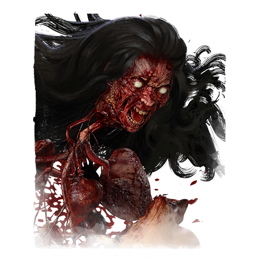
By day, Burong Sukapat appears as a beautiful woman. By night, the Krasue emerges as a disembodied floating head…entrails dangling from its neck, to feed its insatiable hunger. Alternate between forms to plunge Survivors into a nightmare of torn flesh, sopping blood, and grotesque body horror.
The First
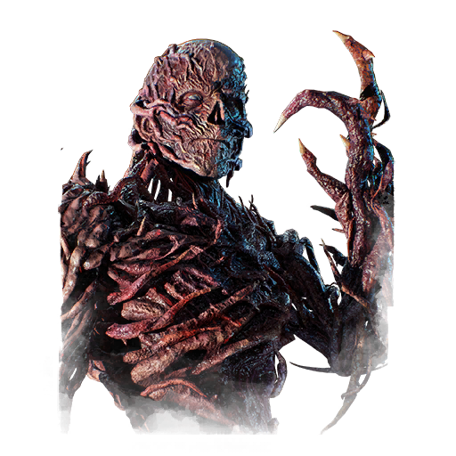
Cruel and calculating, Henry Creel’s disdain for humankind invigorated him with sinister purpose. After years of honing his psionic abilities, he emerged from The Upside Down with unspeakable power at his disposal. The First will be the last face you see, as your bones break and your eyes roll back into your skull.